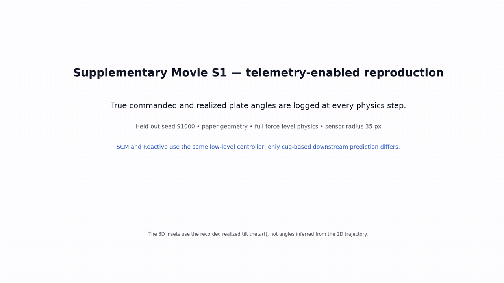
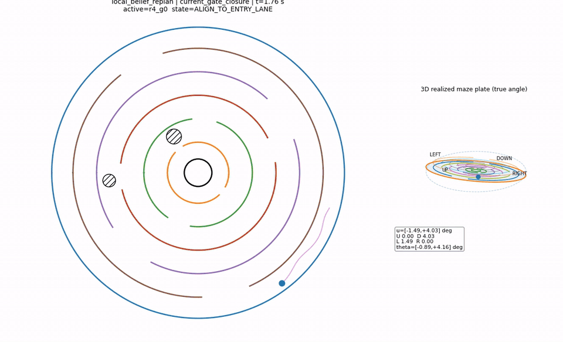
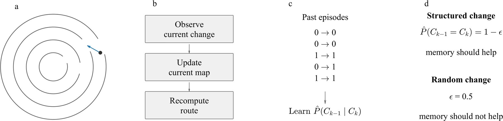

NeurIPS 2026 Workshop on Continual World Models
Physical Experience Builds Continual Spatial World Models
University of Washington
Paper forthcomingCode forthcomingWorkshop ↗
A world model should predict change, not merely remember paths.
Physical experience can turn recurring spatial changes into reusable predictions—allowing an agent to act before a change becomes directly observable, while remaining correctable by physical feedback.

Experience becomes anticipation
In a matched run, Spatial Change Memory anticipates a downstream closure 17.81 s before direct observation, nearly eliminates pursuit of an obsolete route (10.46 → 0.0083 s), and finishes sooner (41.89 → 28.86 s). The gain is prediction learned from experience rather than a faster reaction.

Planning meets physics
A changing maze exposes the gap between planned motion and physical consequences. The animation shows gate-triggered replanning, realized plate tilt, obstacle interaction, and navigation recovery under the same dynamics.
Overview
Agents can repeatedly adapt to a changed environment while retaining little that helps with the next change. This work asks whether accumulated physical experience can support transferable spatial prediction in a circular maze whose gates change across episodes.
Spatial Change Memory (SCM) learns statistical relations between transitions and uses an observed cue to revise belief about a different, not-yet-visible transition. A matched reactive policy updates only after local observation.
Method
A held-out transition tests whether knowledge transfers beyond a response memorized at the evaluation location.

Spatial Change Memory
A cue at one gate updates a shared model of how transitions co-vary, allowing belief about a downstream gate to change before it enters the observation radius.
Reactive baseline
The baseline shares the maze, controller, and current observations, but retains its target until direct sensory evidence forces a local map update.
Representative telemetry
| Measure | Reactive | SCM |
|---|---|---|
| Obsolete-target persistence | 10.46 s | 0.0083 s |
| Completion time | 41.89 s | 28.86 s |
| Prediction timing | Direct observation | 17.81 s earlier |
These values describe the representative telemetry-enabled rerun shown above. They are not population means; aggregate evidence remains part of the frozen manuscript evaluation.
Evaluation design
- Withheld transition
- Tests transfer beyond a location-specific response.
- Zero-information control
- Checks that the update depends on an informative cue.
- Matched intervention
- Holds the maze, seed, physics, and low-level controller fixed while changing the downstream prediction.
Publication status
Accepted at the NeurIPS 2026 Workshop on Continual World Models. The paper, citation, code, and benchmark materials will be linked here after public release.